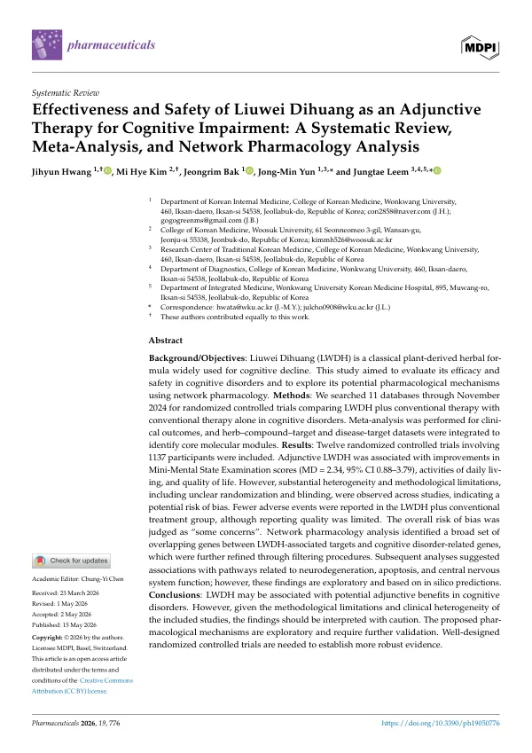

Effectiveness and Safety of Liuwei Dihuang as an Adjunctive Therapy for Cognitive Impairment: A Systematic Review, Meta-Analysis, and Network Pharmacology Analysis
Hwang J, Kim MH, Bak J, Yun JM, Leem J
Pharmaceuticals 19(5):776

첫 장 · 오픈액세스First page · open access
논문 소개Summary
치매를 비롯한 신경인지장애는 인구가 늙어가면서 빠르게 늘고 있습니다. 콜린에스터라제 억제제와 메만틴이 표준 치료로 쓰이지만 병의 진행을 되돌리지는 못하고 소화기 증상이나 어지럼 같은 이상반응이 따라옵니다. 육미지황탕은 인지 저하에 오래 써 온 처방이지만, 통상 치료에 더했을 때 무엇이 얼마나 달라지는지 종합한 근거가 없었습니다.
2024년 11월까지 데이터베이스 11곳을 뒤져, 육미지황탕에 통상 치료를 더한 군과 통상 치료만 한 군을 비교한 무작위배정 임상시험을 모았습니다. 비뚤림 위험은 코크란 RoB 2.0으로, 근거 수준은 GRADE로 평가했습니다. 여기에 더해 약재와 성분, 표적 유전자를 잇는 네트워크 약리학 분석을 붙여 작용 경로를 탐색했습니다.
12편 1,137명이 포함됐습니다. 인지기능 지표인 간이정신상태검사 점수는 육미지황탕을 더한 군에서 더 높았지만 연구 사이 차이가 매우 컸습니다(MD 2.34, 95% CI 0.88~3.79, I2 88%). 일상생활 수행능력을 수정 바델지수로 잰 5편에서는 차이가 뚜렷했고 이질성도 없었습니다(MD 10.00, 95% CI 9.12~10.88, I2 0%). 삶의 질은 좋아졌으나 이질성이 컸고(MD 4.77, 95% CI 0.48~9.06, I2 92%), 총유효율도 육미지황탕 쪽이 높았습니다(RR 1.12, 95% CI 1.04~1.22).
좋아지지 않은 결과도 함께 나왔습니다. 행동심리증상 척도에서는 두 군의 차이가 뚜렷하지 않았고(MD -0.58, 95% CI -1.80~0.64), ADAS-Cog와 한의 증상점수에서도 차이를 확인하지 못했습니다. 이상반응은 육미지황탕을 더한 군에서 더 적게 보고됐지만(RR 0.40, 95% CI 0.26~0.61) 안전성 보고 자체가 부실해 그대로 받아들이기 어렵습니다.
임상적으로 의미 있는 최소 변화량은 치매에서 대략 1.4점에서 3점 사이로 보고돼 왔습니다. 이 연구의 간이정신상태검사 차이 2.34점은 그 범위의 아래쪽에 걸쳐 있습니다. 무작위배정과 눈가림 절차를 제대로 적지 않은 연구가 많아 전체 비뚤림 위험은 우려가 있는 수준으로 판정됐고, 근거 수준은 낮음에서 중간이었습니다. 네트워크 약리학이 짚은 신경퇴행·세포자멸 경로는 컴퓨터 예측일 뿐 검증된 기전이 아닙니다. 육미지황탕이 보조요법으로 도움이 될 가능성은 있으나, 잘 설계된 임상시험이 있어야 말할 수 있습니다.
Neurocognitive disorders including dementia are rising quickly as populations age. Cholinesterase inhibitors and memantine are standard care but do not reverse the disease and bring adverse effects. Liuwei Dihuang has long been used for cognitive decline, yet no synthesis had established what it adds to conventional treatment.
Eleven databases were searched through November 2024 for randomised controlled trials comparing Liuwei Dihuang plus conventional therapy with conventional therapy alone. Risk of bias was assessed with Cochrane RoB 2.0 and certainty with GRADE. A network pharmacology analysis linking herbs, compounds and target genes was added to explore possible mechanisms.
Twelve trials with 1,137 participants were included. Mini-Mental State Examination scores were higher in the adjunctive group, but heterogeneity across trials was substantial (MD 2.34, 95% CI 0.88 to 3.79, I2 88%). Activities of daily living measured by the Modified Barthel Index in five trials showed a clear difference with no heterogeneity (MD 10.00, 95% CI 9.12 to 10.88, I2 0%). Quality of life improved with wide variation between trials (MD 4.77, 95% CI 0.48 to 9.06, I2 92%), and the total effective rate also favoured the adjunctive group (RR 1.12, 95% CI 1.04 to 1.22).
Null results came with them. Neuropsychiatric symptoms on BEHAVE-AD showed no clear difference (MD -0.58, 95% CI -1.80 to 0.64), and neither ADAS-Cog nor traditional symptom scores separated the groups. Fewer adverse events were reported in the adjunctive group (RR 0.40, 95% CI 0.26 to 0.61), but safety reporting was too poor to take at face value.
Minimal clinically important differences for the Mini-Mental State Examination in dementia have been reported in the range of roughly 1.4 to 3 points, so the pooled difference of 2.34 sits at the lower edge of that range. Many trials described randomisation and blinding inadequately, the overall risk of bias was judged as some concerns, and certainty of evidence was low to moderate. The neurodegeneration and apoptosis pathways flagged by network pharmacology are in silico predictions, not verified mechanisms. Liuwei Dihuang may help as an adjunct, but well-designed trials are needed before that can be stated.
인용Cite
Hwang J, Kim MH, Bak J, Yun JM, Leem J. Effectiveness and Safety of Liuwei Dihuang as an Adjunctive Therapy for Cognitive Impairment: A Systematic Review, Meta-Analysis, and Network Pharmacology Analysis. Pharmaceuticals. 2026;19(5):776. doi:10.3390/ph19050776